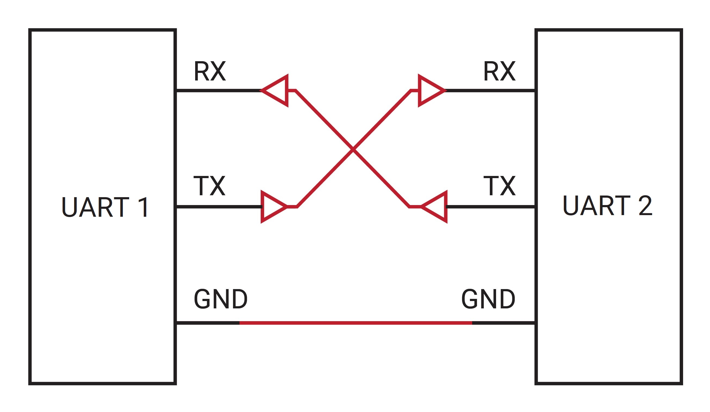

| Version: 0.0.2 |
Loading...
Searching...
No Matches
Turtle-Bot Example
Table of Contents
1. Setup the environment
- Setup environment for communication with FlexXlam and turtlebot
1.1. Hardware setup
1.1.1. Setup raspberry pi for TurtleBot
- Build Driver with local ROS, please use ROS version noetic (Installation)
- NOTE: We prefer you to use docker because the Debian OS version which supports ROS noetic is out of date
How to install docker in RPi Debian OS
- Uninstall the installed old version docker # Uninstall the installed old version Dockerfor pkg in docker.io docker-doc docker-compose podman-docker containerd runc; do sudo apt-get remove $pkg; done
- Set up docker's apt repository # Add Docker's official GPG key:sudo apt-get updatesudo apt-get install ca-certificates curl gnupgsudo install -m 0755 -d /etc/apt/keyringscurl -fsSL https://download.docker.com/linux/debian/gpg | sudo gpg --dearmor -o /etc/apt/keyrings/docker.gpgsudo chmod a+r /etc/apt/keyrings/docker.gpg# Add the repository to Apt sources:echo \"deb [arch="$(dpkg --print-architecture)" signed-by=/etc/apt/keyrings/docker.gpg] https://download.docker.com/linux/debian \"$(. /etc/os-release && echo "$VERSION_CODENAME")" stable" | \sudo tee /etc/apt/sources.list.d/docker.list > /dev/nullsudo apt-get update
- Install the Docker packages sudo apt-get install docker-ce docker-ce-cli containerd.io docker-buildx-plugin docker-compose-plugin
- Verity that the installation is successful by running the
hello-worldimagesudo docker run hello-world - Give permission to user to use docker w/o sudo # Create the docker groupsudo groupadd docker# Add your user to the docker groupsudo usermod -aG docker $USER# Log out and log back in so that your group membership is re-evaluated.newgrp docker# Check the authoritydocker run hello-world
- (Optional) Install ducker to use docker easier curl https://raw.githubusercontent.com/JeiKeiLim/ducker/main/install.sh | bash -s install linux arm64
1.2. Driver setup
1.2.1. Build the Driver on TurtleBot Raspberry Pi
- Should build the driver on TurtleBot raspberry pi for get data from FlexXlam with ROS message
- Please check the README for building FlexXlam driver
2. Run client
- The FlexXlam driver for server will be launched automatically.
- To check the result of FlexXlam, use Remote server of turtlebot to run rviz
- NOTE: The RPi of turtlebot and the remote server must be connected with same network
- NOTE: The command below should be type inside the docker container # 1. Set the ROS master ip of Remote server$ export ROS_MASTER_URI=http://{remote_server_ip}:11311$ export ROS_HOSTNAME={remote_server_ip}# 2. Turn on the roscore$ roscore# 3. launch ros core and rviz$ rviz -d {FlexXlam_driver_dir}/docs/examples/turtlebot/config/rviz.rviz
- Set the remote server ip to turtlebot Raspberry Pi
- If the remote server ip is
192.168.0.3theROS_MASTER_URIwill behttp://192.168.0.3:11311# if using docker, the command below run inside the docker# 1. Setup the master ip of ROS and the host name$ export ROS_MASTER_URI=http://{remote_server_ip}:11311$ export ROS_HOSTNAME={turtlebot_rpi_ip}$ source devel/setup.bash$ roslaunch flexxlam_driver flexxlam_driver_client.launch
3. Configure FlexXlam Configurations
- Check the Server Configuration
4. Hardware connection
4.1. Serial Connection
- To make the serial communication module, connect the pins of module like below

Image from https://www.vectornav.com
- Connect FlexXlam with TurtleBot RPi, use serial module and connect like below

Serial with flexlam and turtlebot3 rpi
4.2. Eternet Connection
TODO(ulken94): Fill this part
- Connect the TurtleBot RPi with FlexXlam module with ethernet, make
5. Custom usage for FlexXlam data
5.1. Subscriber example for FlexXlam data
#include <ros.h>
#include <nav_msgs/Odometry.h>
#include <sensor_msgs/PointCloud2.h>
// There are two major data from FlexXlam sensor
void odometry_callback(const nav_msgs::Odometry::ConstPtr &msg) {
// Do something with odometry msg
std::cout << "pos x: " << msg.pose.pose.position.x <<
" pos y: " << msg.pose.pose.position.y <<
" pos z: " << msg.pose.pose.position.z << std::endl;
}
void pointcloud_callback(const sensor_msgs::PointCloud2::ConstPtr &msg) {
// Do somting with pointcloud msg here
return;
}
int main(int argc, char** argv) {
ros::init(argc, argv, "exampleSubscriber");
ros::NodeHandle nh;
odom_sub = nh.subscribe<nav_msgs::Odometry>("/FlexXlam/odom", 200000, odometry_callback);
pointcloud_sub = nh.subscribe<sensor_msgs::PointCloud2>("/FlexXlam/pointcloud", 200000, pointcloud_callback);
ros::spin();
return 0;
}
5.2. Save PCD data
# CMD,SAVE_PCD,save_pcd_flag,reset_flag
$ rostopic pub /FlexXlam/request std_msgs/String CMD,SAVE_PCD,1,0
- You can send the msg to FlexXlam with code if you need